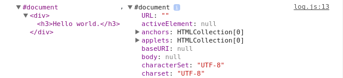

Condições
Dir
O console.dir separa o valor enviado como se fosse um vardump().
Exemplo:
var arr = ["A","B","C"];
var obj = {
X: '1',
Y: '2',
Z: '3'
};
console.dir(arr);
console.dir(obj);
Dirxml
O console.dirxml exibe um valor do tipo xml.
Exemplo:
var parser = new DOMParser();
var xml = parser.parseFromString("<div><h3>Hello world.</h3></div>", "application/xml");
console.dirxml(xml);
Group
O console.group exibe um grupo de debugs dentro da sua chamada, sendo usado em conjunto com o console.groupEnd
Exemplo:
function authentication(name) {
console.log('Limpando cache');
console.log('Autenticando como "%s"',name);
console.error('Falha ao autenticar');
}
console.group('Iniciando autenticação');
authentication('Jean');
console.groupEnd();
GroupCollapsed
O console.groupCollapsed possui a mesma função do console.group, porém a diferença do groupCollapsed para o group é que o Collapsed mostra fechado, e o grupo já exibe todo aberto o detalhamento.
Exemplo:
function authentication(name) {
console.log('Limpando cache');
console.log('Autenticando como "%s"',name);
console.error('Falha ao autenticar');
}
console.groupCollapsed('Iniciando autenticação');
authentication('Jean');
console.groupEnd();
Log
O console.log exibe uma mensagem no console do navegador. O que é interessante é que pode usar variáveis de substituição, aproveitando assim melhor esta função.
Abaixo segue os formatos para fazer a substituição:
| Formato | Descrição |
|---|---|
| %s | Formato para valores do tipo String |
| %d or %i | Formato para valores do tipo Integer |
| %f | Formato para valores do tipo Float |
| %o | Formato para valores do tipo DOM Elemento |
| %O | Formato para valores do tipo Objeto Javascript |
| %c | Formato para valores de saida do tipo CSS |
var inteiro = 10;
var string = 'Usuário';
var floatter = 3.14;
console.log('Este é um inteiro: %i, este é uma string: %s, este é um float %f', inteiro, string, floatter);
// Correto
console.log('Este é um inteiro: %i, este é uma string: %s, este é um float %f', floatter, inteiro, string);
// Incorreto
var parser = new DOMParser();
var xml = parser.parseFromString("<div><h3>Hello world.</h3></div>", "application/xml");
console.log("%o, %O", xml,xml);

var css = "color:yellow; background:blue; font-size: 12pt";
console.log("User %s has %c%d points", string, css, inteiro);
Profile
O console.profile identifica quando inicia e finaliza a chamada do debug.
Exemplo:
function processPixels() {
console.profile("Processing pixels");
console.profileEnd();
}
processPixels();
Time
O console.time Exibe o tempo que demorou para finalizar a chamada do debug. Funciona em conjunto ao console.timeEnd.
Exemplo:
console.time("Array initialize");
var num = 100000;
for(var i = 0; i < num; i++) {}
console.timeEnd("Array initialize");

Fonte:
https://developer.chrome.com/devtools/docs/console-api